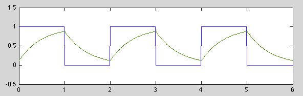
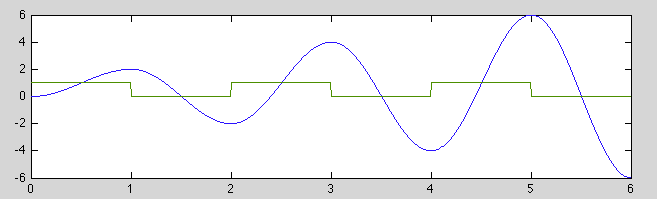
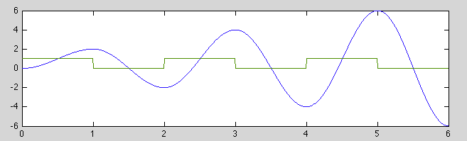

Next: Series and Parallel Resonance
Up: Chapter 3: AC Circuit
Previous: Second Order RCL Circuit
Example 1
Consider the steady state response of a first order RC circuit with the
parameter  to a square impulse train of period
to a square impulse train of period  :
:
where  is the on-time and
is the on-time and  is off-time of the impulse train.
Consider the response
is off-time of the impulse train.
Consider the response  during both the on and off periods:
during both the on and off periods:
- The on-time response can be found based on the assumed initial condition
 :
:
In particular,

- The off-time response can be found based on the initial condition
 to be
to be
In particular,

The two voltages  and
and  can then be found by solving these two
simultaneous equations:
can then be found by solving these two
simultaneous equations:
Substituting the first equation into the second one we can find and then
:
Consider two special cases:
In particular, when  , we have
, we have
and

 ,
,  .
.
Example 2
Consider the steady state response of an undamped second order system with
parameters  and
and  to a symmetric square impulse train of
period
to a symmetric square impulse train of
period  :
:
where is both the on and off-time of the impulse train, which can also
be written as:
The response of the 2nd order system can be obtained based on its step
response
 :
We now consider two special cases:
:
We now consider two special cases:
- If
 is the same as the natural period of
the 2nd order system, then
is the same as the natural period of
the 2nd order system, then
 and we have
the following for all integer
and we have
the following for all integer  :
:

- If
 , the period of the impulse train is
the same as the natural period
, the period of the impulse train is
the same as the natural period
 of the 2nd system,
This is a sinusoid growing linearly.

of the 2nd system,
This is a sinusoid growing linearly.

Next: Series and Parallel Resonance
Up: Chapter 3: AC Circuit
Previous: Second Order RCL Circuit
Ruye Wang
2014-10-05